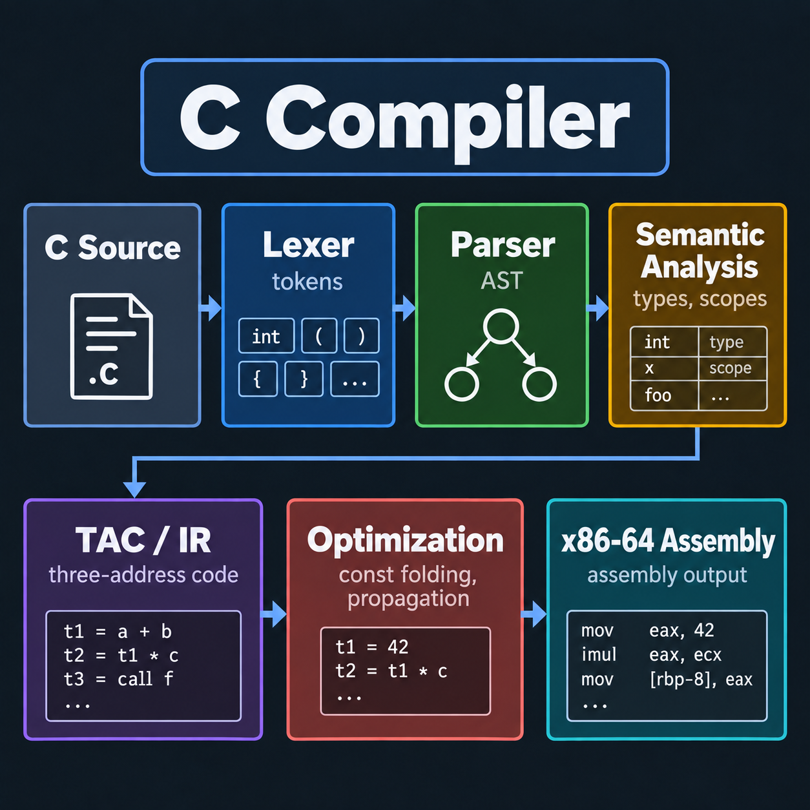
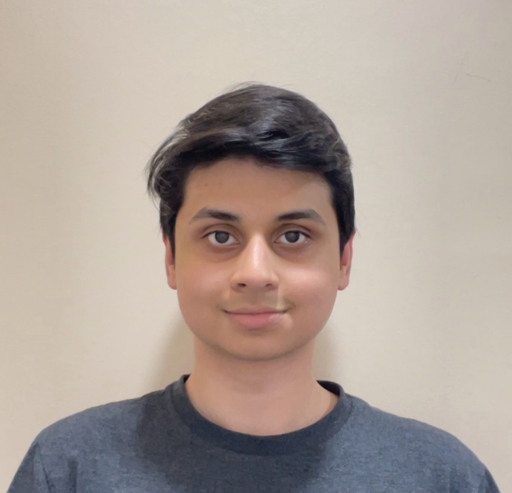
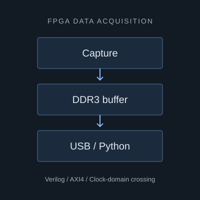
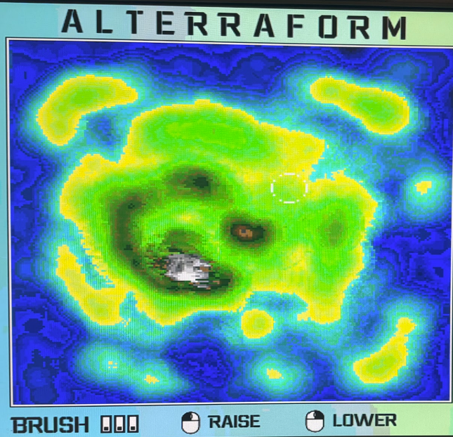

C Compiler
A seven-stage compiler written in C, generating x86-64 assembly.
View projectELECTRICAL & COMPUTER ENGINEERING · UOFT

Third-year Electrical Engineering student at the University of Toronto, interested in compilers, RTL, firmware, and hardware & software co-design.
I’m interested in how software is translated, executed, and how hardware interacts with software.
My recent work includes a C compiler and an FPGA data-acquisition pipeline. I’m looking to explore more of compiler development, digital design, and embedded systems.
BASc, Electrical Engineering · PEY Co-op
September 2024 — Present
CGPA 3.94 / 4.00
Recent software and hardware projects.

A seven-stage compiler written in C, generating x86-64 assembly.
View project
A DRAM-buffered pipeline connecting high-speed sensor input to a USB-C host.
View project
A 3D terrain simulation implemented in Verilog on a DE1-SoC FPGA.
View projectUniversity of Toronto Aerospace Team
Intelligent Sensory Microsystems Laboratory · UofT
The languages, systems, and tools I work with.
C · C++ · Verilog
Python · Java
Zephyr RTOS · UART · QSPI
Interrupt-driven drivers
Microcontrollers · Memory-mapped I/O
Vivado · Quartus Prime · ModelSim
Oscilloscopes · Logic analyzers
FPGA RTL · Clock-domain crossing
Linux · Git · Compiler design
Semantic analysis · Three-address code
Hardware–software co-design